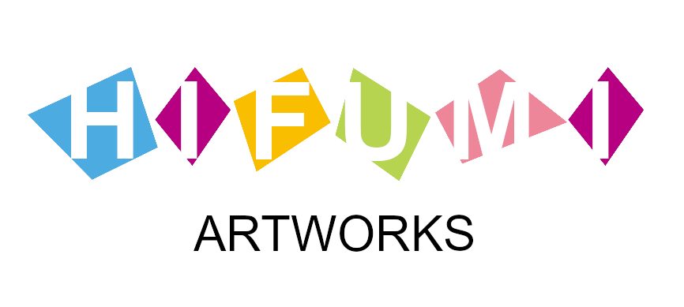
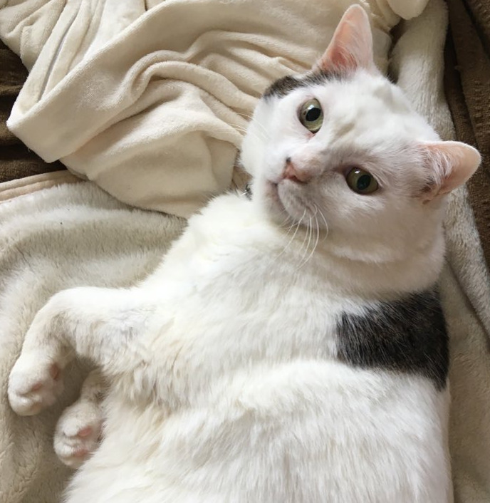

Hifumi Artworks は、（ランダムな日本語の文章）窓の外には青い空が広がり、鳥が飛んでいます。風が心地よく吹いてきます。テーブルの上には赤い花が美しく咲いており、その香りが漂っています。部屋の中には穏やかな音楽が流れ、本棚には古い本が並んでいます。床には柔らかな絨毯が敷かれており、足に触れる感触が気持ちいいです。時間がゆっくりと流れているようで、何もかもが穏やかで平和な瞬間です。窓辺には猫が寝そべり、のんびりとくつろいでいます。
（ChatGPTによりランダムに作成された紹介文）こんにちは、Hifumiと申します。ウェブサイト「ワンダーワールド」の運営者をしています。
このウェブサイトは、私の冒険心と探究心が詰まった場所で、世界中の驚きに出会える場所です。
私の冒険のストーリー、旅行記、写真、そして読者の皆さんに新たな場所を発見するためのヒントやアドバイスを共有しています。
私は幼少期から冒険と探求が大好きで、異なる文化や風景に魅了されてきました。
旅行は私にとって人生の最大の喜びであり、その中から学び、成長することができることを知っています。
「ワンダーワールド」を通じて、私は読者の皆さんに、自分の好奇心を追求し、世界の多様性を探求する勇気を与えたいと考えています。
一緒に未知の場所を訪れ、新しい視点を見つけましょう。新たな冒険が、あなたを待っています。どうぞお楽しみに。

運営主 (Hifumi) が勉強している創作系のご紹介。ちなみにこのサイトも勉強の一環です。